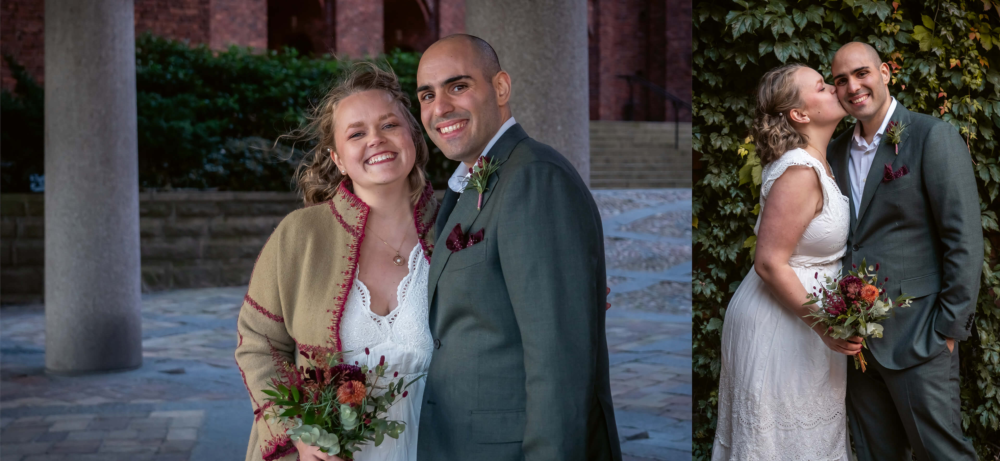

Bröllopsfotograf i Östergötland

All kärlek är vacker, och jag vill fånga den på bild!
Fotona kan ses som ett av de viktigaste minnena ni får med er från er bröllopsdag, så det är viktigt att välja fotograf med omsorg! Jag är en fotograf som fokuserar på att föreviga er kärlek till varandra och era personligheter så era minnen speglar er och eran relation. Jag föredrar att hålla mig lite i bakgrunden och fånga det naturliga som sker. Även om jag såklart även tar mer uppställda bilder så tycker jag det blir bäst om ni får chansen att låta er egen personlighet lysa igenom, och det gör den bäst när ni får chansen att vara er själva och skratta med varandra.
Ett mycket snabbt men fint bröllop vid Stockholms stadshus. Då vigselceremonin enbart bestod av de delar som måste vara med, och därmed var väldigt kort, var det här en av de mest utmanande fotograferingar jag har gjort. Man vill ju ändå se till att få ett antal riktigt bra bilder under vigseln. Efter vigseln tog vi porträttbilder runt stadshuset.

Ett otroligt fint och soligt bröllop utanför Nya Slottet i Bjärka-Säby. Det började med en vigselceremoni i slottsträdgården och sedan tog vi porträttbilder nere vid vattnet.

Ett vackert bröllop i vallgraven vid Ekenäs Slott, där vi tog porträttbilderna före vigseln.
Det första bröllopet jag fotade var på Nya Slottet i Bjärka-Säby. Trots att det regnade fick vi till en ordentlig porträttfotografering på slottet och i området runt omkring, följt av vigseln i slottskapellet.
I alla paket ingår två planeringsmöten (ett digitalt och ett fysiskt i Linköping med omnejd), en provfotografering i samband med det fysiska mötet samt cirka 50-100 bilder per timmes fotografering.
Passar bra för att fånga en kort vigsel samt en kort porträttfotografering på en närliggande plats, alternativt enbart vigsel och mingel eller enbart porträttfotografering.
Ingår i paketet:
Passar bra för att fånga en kort vigsel samt en kort porträttfotografering på en närliggande plats, alternativt enbart vigsel och mingel eller enbart porträttfotografering.
Ingår i paketet:
Passar bra för att fånga en kort vigsel samt en kort porträttfotografering på en närliggande plats, alternativt enbart vigsel och mingel eller enbart porträttfotografering.
Ingår i paketet:
För bröllop mer än 5 mil resväg från Linköping tillkommer en resekostnad på 40 kr/mil. Vid längre resväg än 15 mil kommer vi överens om resekostnad.
Vill ni boka mig för ert bröllop, eller har ni några frågor? Tveka inte att kontakta mig.
bröllop@weareknytt.com